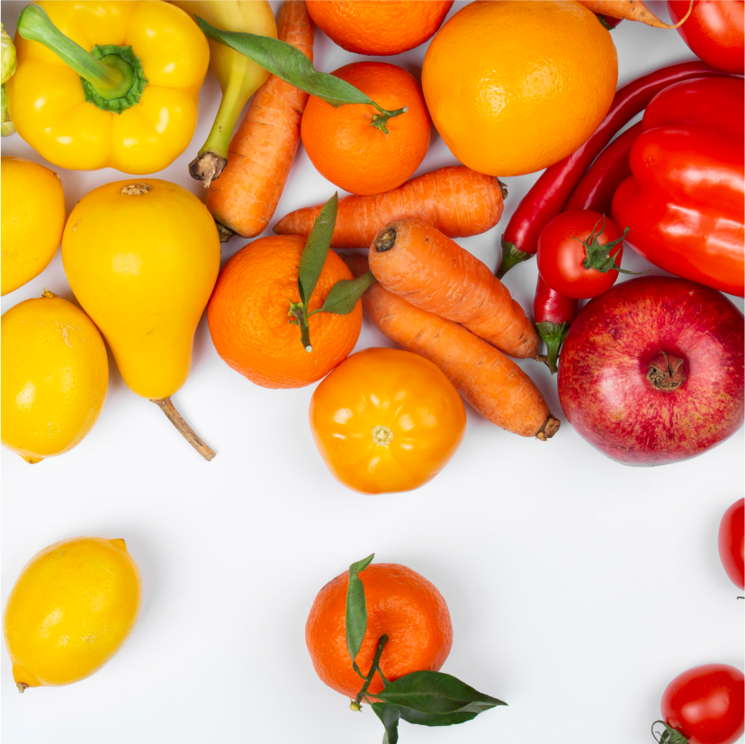

08
de setembro é a data de
aniversário do bairro
+ 128
mil penhenses
de acordo com o último senso
33
subdistritos
que fazem parte do bairro
1986
foi o ano da chegada
do metro no bairro da Penha
A Penha
A Penha é um bairro bastante diversificado, com uma forte presença comercial, industrial e religiosa.
Além disso, o bairro conta com uma série de serviços, como escolas, metro, hospitais e postos de saúde, que atendem não só os moradores da Penha, mas também de outros bairros da cidade.
Localização
O bairro da Penha está em uma localização privilegiada de São Paulo, na região leste da cidade.
O bairro é cortado por importantes vias, como a Avenida Radial Leste, que é uma das principais artérias da cidade, a Avenida Celso Garcia, que liga o bairro ao centro da cidade, além de estar próximo da marginal tietê e ter acesso rápido ao Aeroporto Internacional de Guarulhos.
O bairro é atendido por diversas linhas de ônibus e pela Linha 3-Vermelha do Metrô.
Devs
André
Aline
Jhon
Eliel
Leandro
Marmotas!